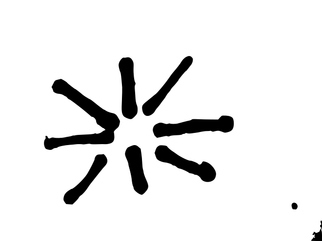
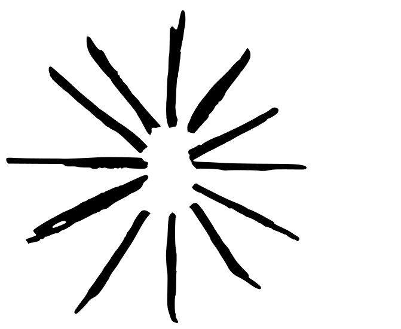
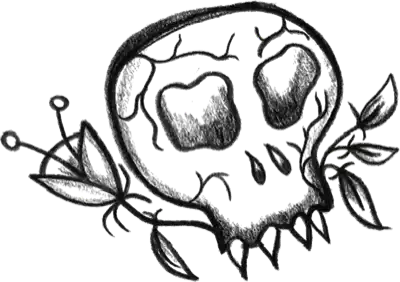
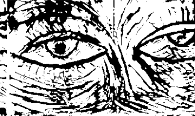
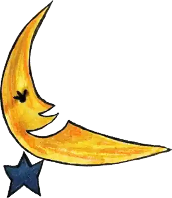

Variable font experiments. CSS animation driving weight, optical size, softness, and quirk axes in real time. Each piece is a self-contained HTML file under 5KB. Click to enter, click inside to freeze.




